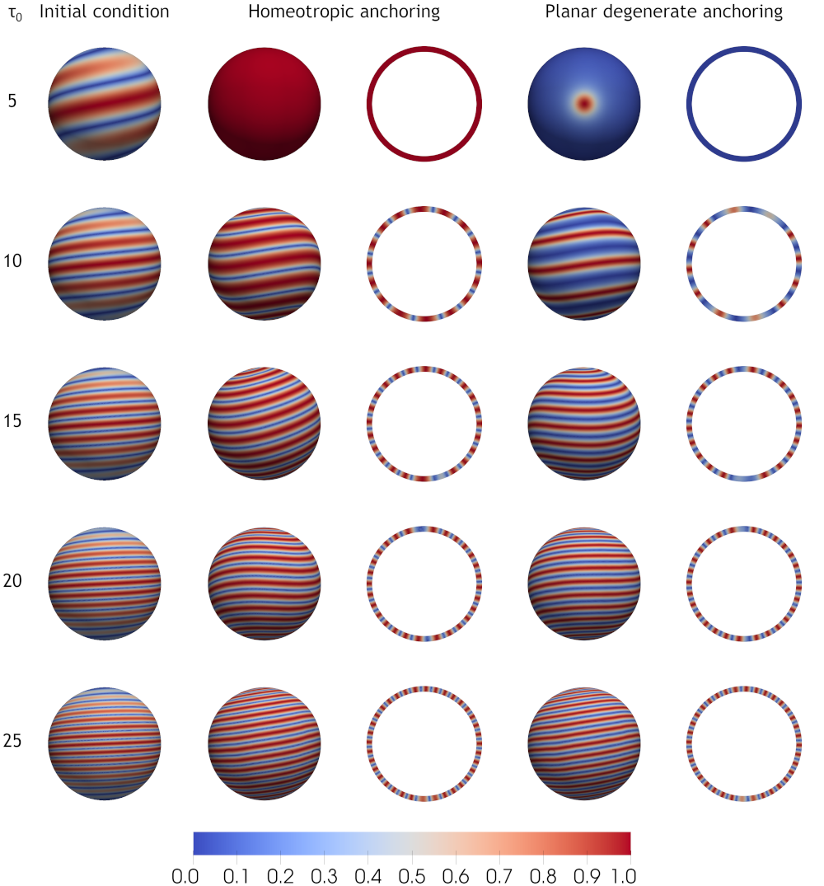
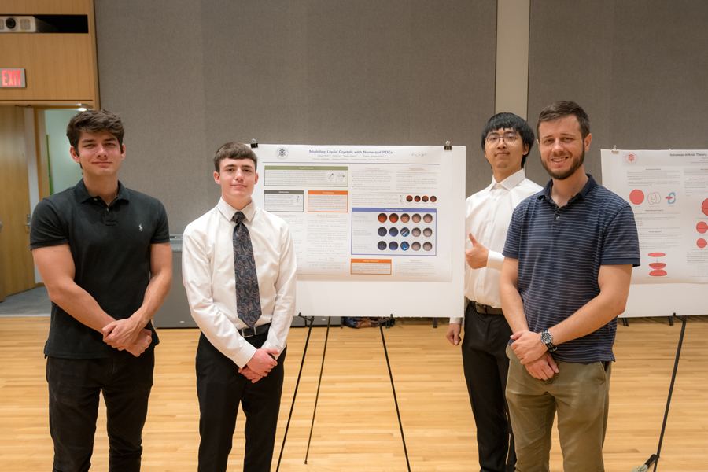

Research
Cholesteric Landau-de Gennes Model
Overview
My research, which began during my Ph.D. at LSU under Prof. Shawn Walker, has largely been focused on the Landau-de Gennes model of liquid crystals, specifically focusing on "cholesteric shells". Cholesteric shells are hollow shells composed of liquid crystal material, and which exhibit a "twisting" behavior, caused by the structure of the liquid crystal molecules.

Simulation results for a cholesteric shell thickness 0.1. We use twists of 5, 10, 15, 20, and 25.
Since these molecules can be represented by a line field defined by unit vector \(n\), we can color a cholesetric shell with coloring \(|n\cdot\nu|\), where \(\nu=[x,y,z]^T\). This manifests as stripes on the shell which have a period of \(2\pi/\tau_0\), where \(\tau_0\) is the cholesteric twist.
I have studied cholesteric shells under both homeotropic and planar degenerate type weak anchoring schemes. I employed a finite element discretization of the cholesteric problem, using a gradient descent scheme with initial guess \(n=[\cos(\tau_0z),\sin(\tau_0z),0]^T\) for each \(\tau_0\). The results of simulating on a shell with an inner radius of 0.9 and outer radius of 1, are shown on the right.
For more details, see my research statement, my recent publication, or my PhD thesis in the links below.
SUAMI 2025
This past summer, I served as a mentor for the Summer Undergraduate Applied Mathematics Institute (SUAMI) at Carnegie Mellon University. I worked with three aspiring undergraduate students to study so-called "defects" in cholesteric liquid crystals. Defects are locations in the liquid crystal where one of the \(\tau\), \(\lambda\), or \(\chi\) vector fields become discontinuous, where \(\tau=n\) is the director field, \(\chi\) points along the axis of twist, and \(\lambda=\tau\times\chi\).

(From left to right) Steven Spasov, Calum "Cal" Heldt, Yuzhi "Leon" Liu, and myself at the 2025 SUAMI poster session.
For this summer's project, I taught them the basics of the Landau-de Gennes model and all of the theory they would need to understand the problem. Then, I had my students implement a finite element solver in Firedrake to perform simulations in 2D. I then taught them how to use my q-tensor-3d finite element code to perform simulations in 3D. They then got started simulating various defect structures in cholesteric liquid crystals, and presented their results at the end of the program. Overall, it was a great experience mentoring these students and helping them get started in research.
Porous Phase Flow
Another research project I have recently started with Prof. Noel J. Walkington at CMU is in the modeling and simulation of flow through porous media. This has applications in a variety of fields, including groundwater flow, oil recovery, and chemical engineering.
The following is based on notes from Prof. Walkington. Suppose we have \(N_c\) conserved components and \(N_p\) phases. A weak statement for the balance of masses \(m\) can be given by \[ (m_t, \hat\mu)_\Omega + a(\nabla\mu, \nabla\hat\mu) = 0, \qquad \forall \hat\mu, \] where \(\hat\mu\) is a test function, \((\cdot,\cdot)_\Omega\) is the integrated inner product over domain \(\Omega\), \(a(\cdot,\cdot)\) is symmetric positive semi-definite, and \(\mu\in\partial\psi(m)\) where \(\psi\) is convex, proper, and lower semicontinuous. An implicit Euler scheme can be given by: \[ (m-\tilde m, \hat\mu)_\Omega + \Delta t\,a(\nabla\mu, \nabla\hat\mu) = 0, \qquad \forall \hat\mu, \] where \(\tilde m\) is the mass at the previous time step. This, along with the constitutive relation \(\mu\in\partial\psi(m)\), is a saddle point of the following Lagrangian: \[ L(\mu, m) = (m-\tilde m, \mu)_\Omega + \frac{\Delta t}{2}\,a(\nabla\mu, \nabla\mu) - \int_\Omega \psi(m)\,dx. \] To find the saddle point, we can find the minimizer of the convex functional \[ I(\mu) = \sup_m L(\mu,m). \] We can then use a variation of Uzawa's algorithm to find \(\mu\): Given initial guess \(\mu_0\), for \(k=0,1,2,\ldots\) perform the following steps:
- Compute \[ m_k = \operatorname*{argmax}_{m\in[0,\infty)^{N_c}} \left[(m,\mu_k) - \int_\Omega\psi(m)\,dx\right]. \]
- Find the gradient \(g_k\) of \(I(\mu)\) at \(\mu_k\) by solving \[ \Delta t \,a(\nabla g_k, \nabla\hat\mu) + (g_k,\hat\mu)= \Delta t\,a(\nabla\mu, \nabla\hat\mu) + (m_k - m_{k-1}, \hat\mu)_\Omega, \qquad \forall\hat\mu. \]
- Update \(\mu_{k+1} = \mu_k - \alpha_k g_k\), where \(\alpha_k\) is determined by a line search.
To numerically solve this, a finite difference scheme will be implemented. One important issue with this algorithm is that it is far too slow in practice, and rarely gives meaningful results. My research this year will investigate better ways to implement this algorithm, or alternative approaches.
Publications
- A. Hicks and Shawn Walker. "Modelling and simulation of the cholesteric Landau-de Gennes model" (2024). Proceedings of the Royal Society A. 480: 20230813. https://doi.org/10.1098/rspa.2023.0813
Other Resources
- A. Hicks. Research Statement (link).
- A. Hicks. "Modeling and Numerical Analysis of the Cholesteric Landau-de Gennes Model" (2024). LSU Doctoral Dissertations. 6390. https://repository.lsu.edu/gradschool_dissertations/6390